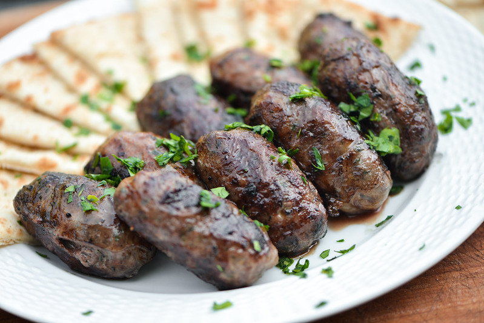

Sheftalia
Home

Description
Sheftalia is a traditional sausage that originated in Cyprus.
It is made from caul fat, or omentum, the membrane that surrounds the stomach of pig or lamb,
to wrap the ingredients rather than sausage casing.
It can be regarded as a type of crépinette. Sheftalia is also regarded as one of the main
staples in Cypriot cuisine.
Ingredients
- 1 pound ground pork
- 1 large onion, finely chopped
- ½ cup finely chopped fresh parsley
- 1 pinch salt and ground black pepper to taste
- 1 tablespoon vinegar
- 8 ounces caul fat
- 10 skewers
Steps
- Combine ground pork, onion, parsley, salt, and black pepper in a medium bowl.
- Fill a bowl with warm water; add vinegar. Place caul fat in vinegar water, keep submerged for 1 minute.
Rinse in cold water, then place on a clean work surface.
Carefully open caul fat; cut into 4-inch squares.
- Place a small compressed handful of sausage mixture near edge of 1 fat square;
fold sides over sausage mixture and roll up firmly. Repeat with remaining sausage
mixture and fat squares until you have about 10 sausages.
- Prepare a charcoal grill for high heat. Place sausages onto skewers.
- Cook on the preheated grill until outsides are crispy and dark and insides
are no longer pink, 20 minutes, turning frequently.